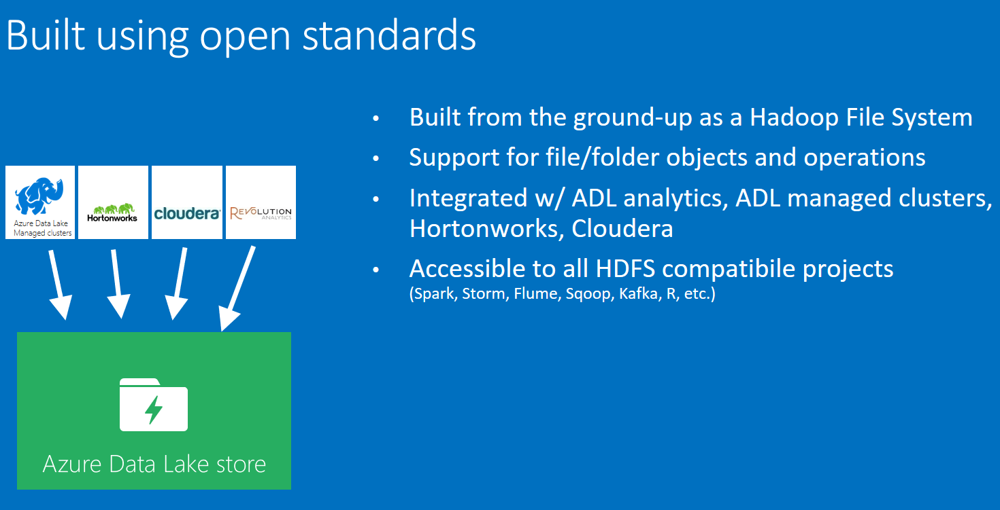
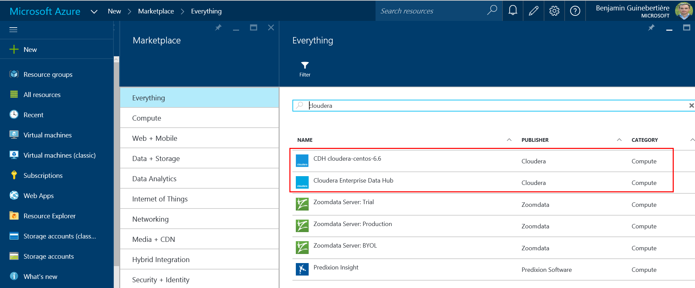
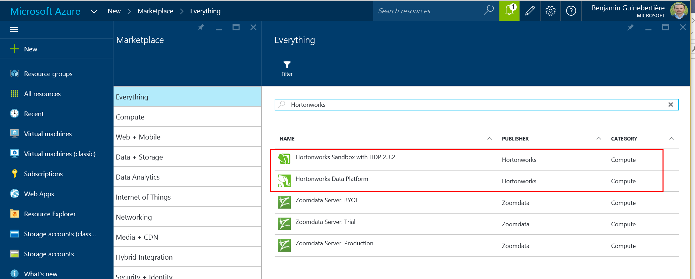
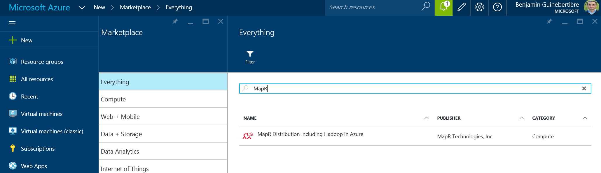

There are four main ways to install Hadoop & Spark:
This blog post shows the different options in the context of Azure.
This option is chosen by people who want to select the components themselves, and want to get the releases as soon as they are available.
If you want that option, it's probably because your want to have control, rather than using a cluster somebody tailored for you.
The recommended way to do in Azure is to use Azure Virtual Machines, virtual network, and install everything yourself.
For that, you may want to leverage Azure Resource Manager templates. A number of examples are available on GitHub. For instance, this one deploys a Zookeeper cluster on Ubuntu VMs.
There are several ways to deploy a Hadoop cluster on Azure, and several ways to store the data.
A virtual machine on Azure has
Data Lake Store is also a new way of storing big data. For now (NOV 2015) it is in preview and can be used from Data Lake Analytics and HDInsight; later on, it will also be usable from standard distributions:

Many articles have been written on how the distributions compare.
Here is how I see them.
Hortonworks is the closest to the Apache Hadoop distribution; All their code is Apache's code and 100% open source. Hortonworks Data Platform (HDP) is described here.
Cloudera is the mots popular; in particular, users like Impala and Cloudera Manager. Their code is 100% open source, but not 100% Apache code (yet?). They recently decided to donate Impala and Kudu to the Apache Software Foundation.
MapR builds a distribution for business critical production applications; they are well known for their MapR file system (MapR-FS) which can be viewed as HDFS (Hadoop Distributed File System) and NFS (Network File System), and has the reputation of being fast. Mapr-FS is proprietary. The distribution is described here.
Anyway, the best solution is the one you chose!
Here is how those distribution leverage Azure. They have different approaches.
| Distribution | uses Cache Disk | uses VHD | uses blobs | prices | options |
|---|---|---|---|---|---|
| Cloudera | Yes | Yes, premium storage only | for cold archive only | high only because Cloudera supports only high end performances | Cluster, single VM |
| Hortonworks | not by default (HDFS) | Yes (HDFS) | Yes | low to high | Cluster, single VM, Hadoop as a service (HDInsight) |
| MapR | Yes (Mapr-FS) | Yes (Mapr-FS) | No. wasb driver is not installed | low to high | Cluster |
NB: the options mentioned above are automated ones. Of course, you can leverage Azure virtual machines and virtual networks to install any distribution you like on a single VM or on a cluster.
The fact that Cloudera only supports blob storage as a cold archive makes it more difficult to create different clusters on the same storage. It also requires that you save the data to blob storage explicitely before shutting down if you need to access the data while the cluster is off.
With MapR, as you don't have the wasb driver, it is difficult to make the data available while the cluster is shut down.
With Hortonworks, you can use Azure blob storage as the default distributed file system. With that, you can start the cluster only when you need compute power. The rest of the time, you can bring data to the storage thru REST API, or SDKs in different languages. When you need compute, you can create a cluster that has the required size. You loose collocality (which is mainly important in the first map phase, before shuffle), but you win a lot of flexibility.
I hope that MapR and Cloudera will enhance their usage of cloud storage with Azure Data Lake Store. Azure Data Lake should meet the performance requirements of Cloudera so that they don't use it only for cold archive. I'm quite confident that Hortonworks will add Azure Data Lake driver. This is already the case with HDInsight.
Let now see how you can deploy those distributions on Azure.
There are different options. This page from Cloudera's web site show the different available distributions. From Azure marketplace, you can find the following (as of 2 DEC 2015):

An automated way of deploying a Cloudera Enterprise Data Hub cluster has been made available by Cloudera on Azure.
You'll find a blog post on how to deploy it on the Azure web site. Also make sure to read the last paragraph (Cloudera Enterprise Deployment from GitHub) which explains there is also a template on GitHub if you need more flexibility.
If you prefer to install a single VM, you can use the Cloudera-Centos-6.6 offer. Its documentation is available at azure.microsoft.com/en-us/marketplace/partners/cloudera/cloudera-centos-6/.
In order to install Hadoop as a service with an Hadoop Data Platform, you can leverage HDInsight on Windows or Linux nodes. Documentation is available at azure.microsoft.com/en-us/documentation/services/hdinsight/.
Besides HDInsight, the marketplace has other options:

In order to install an HDP cluster, you can leverage the wizzard. Note that as of today (2 DEC 2015), the wizzard deploys HDP 2.1, while latest version of HDP is 2.3. An updated version of this wizzard should be made available in the coming weeks, hopefully. If you want to have an early look at this, I think this is on Github: github.com/Azure/azure-quickstart-templates/tree/master/hortonworks-on-centos.
If you want to install a single VM, a sandbox is available. If you can read French or if you know how to have the page translated for you, you are welcome to read my previous post: Hadoop : Comment réduire ses coûts HDInsight pour le développement
MapR is also available on the Azure marketplace:

In order to install the cluster, please see this blog post
We saw that there are a number of options to install Hadoop on Azure.
Want to comment? I'm sorry, I didn't leverage a tool like Disqus yet on this blog. Please feel free to e-mail me at my twitter alias at microsoft dot com and I'll include your remarks in the body of this post.
:-)
Benjamin (@benjguin)